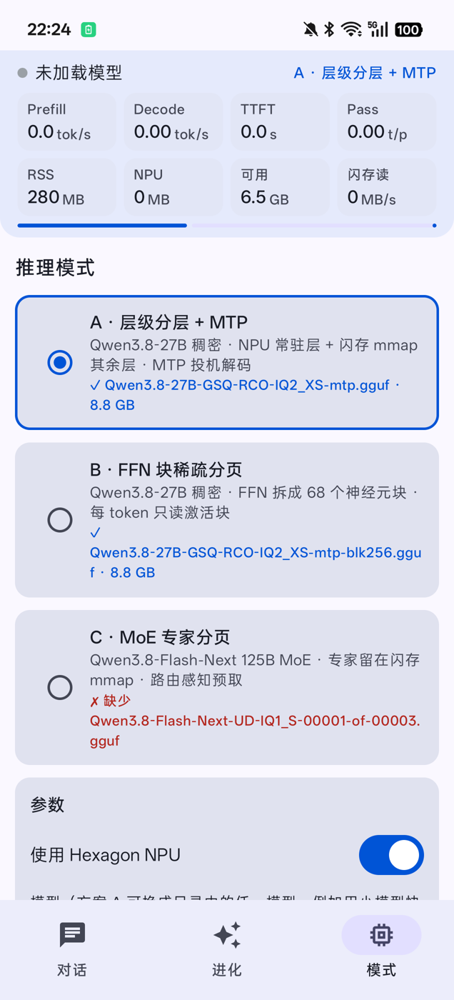

目标是在一台 12 GB 内存的骁龙 8 Gen 5 手机上，把远超内存容量的开源大模型跑起来：Qwen3.8-27B（稠密，64 层）和 Qwen3.8-Flash-Next（125B MoE，48 层 × 512 专家）。约束只有三条：NPU 可用内存约 4–6 GB 且不可换出；闪存顺序读 2.6–3.9 GB/s；模型权重 8.8 GB（27B @2.5 bpw）与 72.5 GB（125B @1.56 bpw）。方案的核心是把“权重放在哪一层存储、由哪个计算单元在何时读取”做成分层调度：NPU 常驻热权重，其余权重以文件页留在闪存上按需分页，并通过投机解码与预取把一次读取摊到多个 token。
| 方案 | 模型 | 核心思想 | NPU 职责 | 闪存职责 | 关键开关 |
|---|---|---|---|---|---|
| A 层级分层 + MTP | Qwen3.8-27B GSQ-RCO IQ2_XS（8.8 GB） | 按每层 tile 字节在内存预算内选 NPU 常驻层；其余层 mmap，从 UFS 分页；MTP 草拟 3 token、一次前向验证 | 常驻层的全部算子 | 非常驻层权重（页缓存 = LRU 层） | -ngl auto --load-mode mmap --spec-type draft-mtp |
| B FFN 块稀疏分页 | 同上，ffn_down 无损块重排（8.8 GB） | FFN 17408 个神经元切为 68 个 256 神经元块，当作“专家”；每 token 按 |SiLU(gate)| 能量选 m 块，up/down 只读这些块 | 同 A | 只读被选中的 up/down 块 | LLAMA_FFN_SPARSE_BLOCKS=m |
| C MoE 专家分页 | Qwen3.8-Flash-Next UD-IQ1_S（72.5 GB） | 稠密部分上 NPU；24,576 个路由专家全部 mmap 留在闪存；路由感知并行预读（本层同步 + 下一层路由器预测异步） | 注意力 / DeltaNet / 共享专家 / 路由器 | 路由专家 + 29 GB n-gram PLE 表 | -ot exps=CPU LLAMA_EXPERT_PREFETCH=3 -t 2 |
| 项目 | 实测 / 规格 | 对方案的含义 |
|---|---|---|
| SoC / CPU | SM8845 · 8 核 Oryon，最高 3.8 GHz | CPU 承担 NPU 不支持的算子与非常驻层（方案 A/B）、路由专家（方案 C） |
| NPU | Hexagon v81：6 个 HVX 线程（1024-bit 向量）、1 个 HMX 矩阵单元、8 MB VTCM、DMA64 | HVX 负责解码（matvec），HMX 负责 prefill（批量 matmul） |
| 内存 | MemTotal 11.4 GB；开机后 MemAvailable 5–7 GB；12 GB zram | NPU 用 rpcmem（ION/DMA-BUF），不能换出；只有文件页可以被回收 |
| NPU 地址空间 | 每个 FastRPC 会话约 3.5 GB 32 位窗口 | 超过窗口的权重靠后端动态 map/unmap，或多虚拟会话切层 |
| 闪存 | O_DIRECT 顺序读：1 MiB×1 线程 2.58、4 MiB×4 线程 3.89、16 MiB×4 线程 3.54 GB/s | “每 token 读多少字节”直接给出速度上限：读 1 GB ≈ 0.26–0.38 s |
基线（同一设备，整个模型常驻 NPU）：Qwen3-VL-4B Q4_0 prefill 1040 tok/s、decode 21.3 tok/s；Qwen3-8B Q4_K_S（4.47 GiB）prefill 628 tok/s、decode 11.2 tok/s，计算图只切成 2 段（CPU 2 个 GET_ROWS 节点，NPU 907 个节点）。由 8B 的 4.47 GiB / 11.2 tok/s 可得 NPU 解码的有效权重带宽约 54 GB/s，比闪存快 14 倍：放不进内存的那部分权重决定了速度。
执行模型。llama.cpp 为每个 ubatch 构建一张 ggml 计算图，ggml_backend_sched 按“权重在哪个设备 + 设备是否支持该算子（supports_op）”把节点分配给 HTP0 或 CPU，再把连续同设备的节点切成 split，在 split 边界插入张量拷贝。Hexagon 后端把一个 split 内的算子批量打包（op batching）成一次 FastRPC 调用送到 cDSP；DSP 侧按算子类型选择 HVX 或 HMX 内核，由 6 个 HVX 硬件线程并行，权重按行块经 DMA 从 DDR 预取到 VTCM（预取深度 2–16 由 VTCM 预算求解）。主机侧开启 OPPOLL 后以轮询等待完成，省去中断唤醒延迟。
| 类别 | 算子 | 类型 / 约束 |
|---|---|---|
| 矩阵乘 | MUL_MAT、MUL_MAT_ID | 权重：Q4_0/Q4_1/Q8_0/IQ4_NL/MXFP4/Q2_K–Q6_K、新增 IQ1_S/IQ1_M/IQ2_XXS/IQ2_XS/IQ2_S/IQ3_XXS/IQ3_S/IQ4_XS；激活 F32/F16；MUL_MAT_ID 要求每专家行数为 32 的倍数（本项目修复的越界） |
| 注意力 | FLASH_ATTN_EXT、SOFT_MAX、ROPE（NORMAL/NEOX/MROPE/IMROPE/VISION） | K/V F16 或 Q8_0；mask F16；按 VTCM 预算拒绝过大配置 |
| 线性注意力 | GATED_DELTA_NET（HMX→HVX）、SSM_CONV | F32，S_v ≤ 128，d_conv ≤ 32 —— Qwen3.5/3.8 的 48 个 DeltaNet 层全部可上 NPU |
| 逐元素/归一化 | ADD/SUB/MUL/DIV、RMS_NORM/NORM/L2_NORM、SILU/GELU/SIGMOID/…、SWIGLU/GEGLU | F32（部分 F16） |
| 数据 | GET_ROWS、SET_ROWS、CPY/CONT、CONCAT、REPEAT、PAD、ROLL、FILL | GET_ROWS 只支持 repack 过的 Q4_0/Q4_K/Q6_K/Q8_0 与 F32/F16 —— 词嵌入常留在 CPU |
| 规约/排序 | SUM、SUM_ROWS、ARGMAX、ARGSORT、TOP_K、CUMSUM | F32，按 VTCM 布局求解 |
主机在 set_tensor 时把权重从 ggml 块格式重排成 DSP 专用的 tile：每个 tile 覆盖 32 行（输出通道）× 32 列（K 维），一个 HVX 向量（128 B）恰好容纳 32 行 × 4 字节，vrmpy 一条指令完成 32 行 × 4 个 int8 乘加。tile 内按“列组优先”排列：字节 4·row + b 存 K 组 g 的第 b 个元素，所以解包后的向量可以直接与按同样方式排列的 int8 激活做 Q6_Vw_vrmpyacc_VwVbVb。
| tile 类型 | 字节/tile | bpw | 布局 |
|---|---|---|---|
| Q4_0 / IQ4_NL | 576（对齐 640） | 4.5 | 4 个 nibble 向量 + 32 个 fp16 scale |
| Q4_1 / Q4_K | 640 | 5.0 | nibble + fp16 scale + fp16 min |
| Q6_K | 896 | 7.0 | 低 4 位 4 向量 + 高 2 位 2 向量 + 每 16 一个 fp16 scale |
| Q3_K / Q2_K | 512 | 4.0 | 低 2 位 2 向量 + 第 3 位平面 / offset + 每 16 一个 fp16 scale |
| IQ2 / IQ1（新增，LUT3） | 512 | 4.0 | Q3_K 布局，3 位码经类型 LUT 映射为 int8 |
| IQ3_XXS / IQ3_S（新增，LUT4） | 576 | 4.5 | IQ4_NL 布局，4 位码经类型 LUT 映射为 int8 |
激活在每次 matmul 前由 DSP 动态量化为 q8_0 tile（每 32 个 K 值 1152 B：32 行 int8 + fp16 scale；带 offset 的权重用 q8_1，1280 B，多存块和）。解码阶段（1 行激活）走 HVX matvec；prefill（≥4 行）走 HMX：先由 HVX worker 把权重 tile 反量化成 fp16 tile（32×32×2 = 2048 B），再交给 HMX 做 fp16 矩阵乘，激活与反量化在 VTCM 中流水。
precompute_matmul_params）：HMX_2D（批量、K 对齐 32）；HVX_QUANT_ROW / QUANT_BLOCK（解码，按行或按块切分到 6 线程）；mv_2d（单行 matvec）；nx 融合（共享同一激活的多个 matmul 合并成一次调用，如 gate/up、Q/K/V，激活只量化一次）；4D 批量。htp_mm_hvx_vtcm_layout_build 按线程数 × 预取深度 × tile 行大小计算权重缓冲、激活 tile、输出缓冲，深度从 16 向 2 递减直到放进 8 MB；放不下则 supports_op 拒绝，算子留在 CPU。ISTA-DASLab 的 GSQ-RCO 是逐张量混合精度量化：27B 的 IQ2_XS 版本 866 个张量用到 13 种格式（IQ1_M 31、IQ1_S 36、IQ2_XXS 70、IQ2_XS 53、IQ2_S 60、IQ3_XXS 37、IQ3_S 47、IQ4_XS 11、Q2_K 53、Q4_K 4、Q6_K 8、BF16 96、F32 360），其中 8 种此前 NPU 不支持。IQ 格式用“码本索引”编码：例如 IQ2_XXS 每 8 个权重存 1 个 8 位网格索引 + 7 位符号索引，网格每项是 8 个取自 {8, 25, 43} 的幅度。直接在 HVX 上按索引查表需要逐 lane vgather，吞吐跟不上解码带宽。
关键观察：这些网格的取值集合都很小。我们在主机 repack 时把“网格索引 + 符号”展开成每权重一个小整数码，DSP 只需一条 vlut32 把码映射回 int8，其余与已有的 Q3_K / IQ4_NL 内核完全相同：
| 源格式 | 源 bpw | 码 | LUT（int8） | scale | tile |
|---|---|---|---|---|---|
| IQ2_XXS / IQ2_XS / IQ2_S | 2.06 / 2.31 / 2.56 | 幅度索引(2b) | 符号<<2 | 8, 25, 43, –, −8, −25, −43 | d·(2ls+1)/8，每 16 | LUT3 |
| IQ1_S / IQ1_M | 1.56 / 1.75 | 2·(grid+1) + (δ>0) | −9, −7, −1, 1, 7, 9（= 8·(g±⅛)） | d·(2ls+1)/8，每 16 | LUT3 |
| IQ3_XXS | 3.06 | 幅度索引(3b) | 符号<<3 | ±{4,12,20,28,36,44,52,62} | d·(2ls+1)/4，每 32 | LUT4 |
| IQ3_S | 3.44 | 幅度索引(3b) | 符号<<3 | ±{1,3,…,15} | d·(2ls+1)，每 32 | LUT4 |
| IQ4_XS | 4.25 | 原 nibble（与 IQ4_NL 同码本） | kvalues_iq4nl | d·(ls−32)，每 32 | IQ4_NL |
v = vptr[g>>2] // 2 位平面：4 组共享一个向量 lo2 = (g&3)==3 ? vlsr(v,6) : vand(vlsr(v,2·(g&3)), 0x03) q_hi = Q6_Q_vand_VR(vptr[2], 0x01010101 << g) // 第 3 位平面 → 谓词 code = Q6_V_vandor_VQR(lo2, q_hi, 0x04040404) // code = lo2 | bit2<<2 w = Q6_Vb_vlut32_VbVbI(code, lut, 0) // 码 → int8 权重 acc = Q6_Vw_vrmpyacc_VwVbVb(acc, w, act[g]) // 32 行 × 4 MAC // 每 4 组（16 个 K）结束：acc(int32→fp32) × (w_scale_fp16 × act_scale_fp16)
相比 Q3_K 内核只多一条 vlut32；HMX 路径的反量化同样在 int8 之后乘 fp16 scale 写出 fp16 tile。读回（get_tensor，test-backend-ops 与状态保存需要）用反查表重建网格索引：码模式 → 网格索引（2^16 / 2^12 项哈希表）、8 位符号 → 7 位奇偶索引（ksigns 反查）、scale 按“最大子块取最大 ls”恢复。
| 验证 | 结果 |
|---|---|
| 转码数值（Mac，ggml 参考量化 → 解码对比，7 种格式） | 最大相对误差 4.7e-4–4.9e-4（= fp16 存 scale 的舍入 2−11），比量化误差小两个数量级 |
| 读回往返 | 93–98% 的块逐字节一致，其余数值误差 < 1e-3 |
| test-backend-ops MUL_MAT（NPU 真机） | IQ2_XXS 71/71，其余 7 种各 49/49 |
| test-backend-ops MUL_MAT_ID | 8 种 IQ 全部通过（3–73 例） |
| 回归（11 种已有格式 MUL_MAT） | IQ4_NL 56、Q4_0 101、Q4_1 86、Q8_0 96、Q2_K 55、Q3_K 48、Q4_K 103、Q5_K 78、Q6_K 55、MXFP4 78、F16 361 全部通过 |
-ngl N 把最后 N 层（含其 KV/RS 状态）放到 HTP0，前 64−N 层在 CPU；输出头在 N > n_layer 时上 NPU。方案 A/B 中 N 由 App 自动计算：用 gguf 元数据逐张量累加“repack 后字节”（按 tile bpw），从最后一层向前累加到预算为止；预算 = MemAvailable − 2 GiB 保留 − 1.5 GiB（KV、计算缓冲）。-ngl 999 -ot "ffn_(up|gate|down|gate_up)_exps=CPU"，路由专家权重强制留在 CPU 的 mmap 缓冲，其余（注意力、DeltaNet、路由器、共享专家、超连接）进 NPU。首次以 -ngl 20 加载 27B 时手机直接重启。逐步排查：纯 CPU（--device none -ngl 0）运行最低 MemAvailable 7.25 GB、权重显示为 CPU_Mapped 8022 MiB；只要启用 HTP 设备（即使 -ngl 0），日志变为 CPU model buffer 8022 MiB，RssAnon 一路涨到内存耗尽。根因有两个：
caps.mmap_support = false，llama.cpp 的 AUTO 逻辑只要任一设备不支持就对整个模型关闭 mmap，于是 CPU 层的 8 GB 也被拷进匿名内存。修复：显式 --load-mode mmap，NPU 层照常 repack 进 rpcmem，CPU 层保持可回收的文件页。已分配 + 本次 + 保留(GGML_HEXAGON_MEM_RESERVE，默认 2 GiB) ≤ 基线 才允许；超出则分配失败、加载报错退出，而不是拖垮系统。另加设备侧看门狗（MemAvailable < 1.2 GB 时结束进程）。修复后 -ngl 4 --load-mode mmap：CPU_Mapped 7210 MiB + HTP0 1073 MiB，最低 MemAvailable 6.5 GB。
为什么 MTP 是关键杠杆。稠密模型每个 token 都要读完全部权重，访问模式没有冷热差别，缓存无效；能做的只有让一次读取服务多个 token。Qwen3.8 自带 1 层 MTP（ggml-org 也发布了单独的 mtp GGUF）。llama.cpp 的 draft-mtp 用主模型最后的隐状态驱动 nextn 层草拟，主模型在一个 ubatch 里验证；对 Qwen3.5 混合架构（DeltaNet 递归状态不支持删后缀），部分接受时 common_prompt_checkpoint 恢复状态再重放已接受 token。
| 配置（27B IQ2_XS，2048 ctx，同一提示） | prefill tok/s | decode tok/s | 备注 |
|---|---|---|---|
| 纯 CPU，mmap（--device none） | 1.19 | 0.11 | 最低 MemAvailable 7.25 GB |
| NPU 4 层 + CPU 60 层，mmap | 1.31 | 0.09 | CPU 层是瓶颈 |
| NPU 14 层 + CPU 50 层，mmap，无 MTP | 1.19 | 0.10 | 每次前向从闪存重读约 7 GB |
| 同上 + MTP（草拟 3） | 1.28 | 0.193 | 接受 31/78（39.7%），每次前向 2.2 token，1.93× |
| 同上 + 逐层预取（WILLNEED，提前 2 层） | 1.29 | 0.113 | 更慢：读取量不变（201 vs 197 GB），读速 0.66→0.40 GB/s |
| 同上 MTP + O_DIRECT 逐层流式（LLAMA_WEIGHT_STREAM） | 2.14 | 0.614 | 3.2×；输出与 mmap 版本逐字一致；有效读速 1.46 GB/s |
瓶颈分析。NPU 只能常驻 14 层（tile 膨胀后约 200 MB/层，预算约 2.9 GB），其余 50 层（约 6.8 GB）每次前向都要从闪存重读——页缓存只剩约 2.3 GB，装不下。/proc/<pid>/io 显示 57 个 token 期间读取 197 GB（每次目标前向约 7.5 GB），而 mmap 缺页的实际读速只有约 0.66 GB/s，远低于 O_DIRECT 大块读的 3.9 GB/s。依赖页缓存的 WILLNEED 预取在工作集大于缓存时无效且有害（与缺页读争用同一 UFS 队列，读速降到 0.40 GB/s），App 默认关闭。
O_DIRECT 逐层流式（本项目新增，src/llama-weight-stream.cpp）。加载后通过 /proc/self/maps 把每个 CPU 层的权重张量映射回（文件，偏移），合并为 4 KiB 对齐的连续读区间；分配两块轮换缓冲区（每块 = 最大层的字节数），4 个 I/O 线程以 4 MiB 块 pread(O_DIRECT)。每层开头插入一个 CPU 自定义算子：恢复上一层张量的 mmap 指针、等待本层缓冲区就绪、把本层张量的 data 指向缓冲区、再向另一块缓冲区提交下一流式层的读取——最后一个 CPU 层之后提交下一次前向的第 0 层，恰好与 NPU 上 14 层的计算重叠。读取绕过页缓存，不再与常驻数据争用内存。实测解码 0.193 → 0.614 tok/s（3.2×），prefill 1.28 → 2.14 tok/s，生成文本与 mmap 版本逐字一致（MD5 相同），有效读速 1.46 GB/s。MTP 依然叠加生效（1.93× 来自摊薄）。剩余差距来自 CPU 层的计算与读取尚未完全重叠，以及只有 2 块缓冲区；进一步把这些层交给 NPU 计算（rpcmem 环形缓冲）见第 12 节。
借鉴 LLM-in-a-flash（行列打包）与 CATS（基于门控激活阈值的稀疏）思想，把稠密 FFN 改造成“块 MoE”：17408 个神经元按 256 一组切成 68 块，每块视为一个专家；门控 matmul 完整计算，用每块的 Σ|SiLU(gate)| 选出 top-m 块，up 与 down 只计算、只读取这 m 块。
gate = silu(W_gate · x) [17408] → reshape [256, 68] score[b] = Σ_i |gate[i, b]| sum_rows(abs(.)) → [68] ids = argsort_top_k(score, m) [m] up = mul_mat_id(reshape(W_up,[5120,256,68]), x, ids) // W_up 行本来连续：零改动 h = get_rows(gate, ids) ⊙ up [256, m] y = Σ_m mul_mat_id(W_down_blk[256,5120,68], h, ids) // 需要离线块重排
无损块重排。ffn_down 的“神经元”是列，按列取会触碰每一行的每一页。离线工具 gguf_ffn_blockify.py 把每行第 j 个 256 值量化块搬到专家 j 下（只移动字节，不重新量化），得到 ffn_down_blk [256, 5120, 68]；MTP 层保持稠密。27B 文件 8.76 GB 重排耗时 17 s，体积不变。图只用现有算子（ABS、SUM_ROWS、ARGSORT/TOP_K、GET_ROWS、MUL_MAT_ID），CPU 与 NPU 都能执行。
| 每 token 激活块 m / 68 | FFN 读取比例 | 总读取比例* | PPL | 相对稠密 |
|---|---|---|---|---|
| 稠密原版 | 100% | 100% | 5.943 | — |
| 68（全部，正确性校验） | 100% | 100% | 5.943 | +0.0% |
| 60 | 92% | 95% | 6.353 | +6.9% |
| 51 | 83% | 89% | 7.308 | +23.0% |
| 34 | 67% | 79% | 13.50 | +127% |
| 17 | 50% | 68% | 504.4 | 不可用 |
PPL：llama.cpp 文档语料，ctx 512 × 6 块，Mac CPU。*FFN 约占权重 63%，gate 始终全读：FFN 读取比例 = 1/3 + 2/3·m/68。
真机结果（m=60，NPU 14 层，ub=128）：开 MTP 0.079 tok/s（接受率降到 26%），不开 MTP 0.050 tok/s；输出文本正确（NPU 上 reshape 视图 + MUL_MAT_ID 路径验证无误）。与方案 A 相比闪存读取量没有下降（225 vs 223 GB / 31 token），而读速减半（选中的块打乱了顺序访问，内核预读失效）。原因：m=60 时理论读取只少 5%，被访问模式的变差抵消；开 MTP 时 4 个 token 的选中块取并集几乎覆盖全部块，块稀疏与批量验证天然冲突，同时稀疏化降低了 MTP 草稿与主模型的一致性。只有 m ≤ 34 才显著减少读取，但精度不可接受（PPL +127%）。结论：在不训练预测器的前提下，块稀疏 FFN 在该设备上没有收益。它作为可工作的实现保留（离线工具、计算图、App 模式），改进方向见第 12 节。
这是 Strata 所针对的模型：48 层，每层 512 个专家（FF 640）+ 1 个共享专家，每 token 激活 10 个；另有一张 29 GB 的 n-gram PLE 嵌入表（每 token 只读少数几行）、超连接（hyper-connection）与 MTP 层。llama.cpp 以 qwen4exp 架构支持它。UD-IQ1_S 三个分片共 72.5 GB。
预取实现完全在计算图里完成：build_moe_ffn 在得到 selected_experts 后插入一个只在 CPU 上执行的自定义算子（ggml_custom_4d，参数为 ids 与三个专家张量），读出 ids 去重后对每个专家切片 data + e·nb[2]、长度 nb[2] 批量发出 MADV_WILLNEED（复用 llama_prefetch），内核即可并发发起闪存读，而不是由计算线程逐页缺页。等级 2 时 qwen4exp 在第 l 层额外计算 argsort_top_k(W_router(l+1) · x_l, 10) 并预取第 l+1 层专家——这正是 Strata 的 lookahead（相邻层残差流变化小，Strata 报告约一半的 SSD 读被提前命中）。
等级 3（默认）：并行预读。手机上等级 2（WILLNEED，含下一层预测）实测只有 0.08 tok/s，与关闭预取的 0.06 相近——WILLNEED 只是提示，计算线程仍会先于读取到达并逐页缺页。于是新增 llama_page_fill（src/llama-weight-stream.cpp）：通过 /proc/self/maps 把专家切片地址映射回（分片文件，偏移），按 4 MiB 块分发给一个常驻 I/O 线程池（LLAMA_FILL_THREADS，默认 6）做普通 pread——读入的数据留在页缓存，随后计算线程访问 mmap 时直接命中。本层的读取同步等待（读完才算），预测的下一层异步提交；同时对每个专家张量做一次 MADV_RANDOM，关闭模型映射默认的顺序预读。对照：关闭预取时缺页按顺序预读把相邻专家一起读入，一次 32 token 的运行从闪存读了约 1.2 TB；开启等级 3 后同样的运行约 60 GB（两项改动一起生效，未单独拆分 MADV_RANDOM 的贡献）。
| 配置（125B UD-IQ1_S） | prefill tok/s | decode tok/s | 闪存读 / token | 备注 |
|---|---|---|---|---|
| 手机：稠密部分 48 层全部上 NPU（-ngl 999，专家 -ot CPU） | — | — | — | 加载被 rpcmem 预算保护拦下：已分配 3074 MiB，再分配 474 MiB 会使剩余低于 2 GiB 保留 |
| 手机 -ngl 40，6 线程：预取关闭 / 等级 2（WILLNEED）/ 等级 3（并行预读） | 0.78 / — / 1.00 | 0.06 / 0.08 / 0.10 | ≈38 / — / ≈1.9 GB | 关闭与等级 3 冷却到 45 °C 以下交替各测两次，结果一致；等级 2 为单次；CPU 频率上限 1.90 / 1.65 GHz |
| 同上 6 线程，等级 3，首次运行（频率上限较高） | 2.28 | 0.42 | ≈1.9 GB | 读取量相同，速度差 4× 来自 CPU 频率——说明瓶颈在 CPU 侧而不在闪存 |
| 线程扫描（等级 3，-ngl 40，16 token）：1 / 2 / 3 / 4 / 5 / 6 / 8 线程 | 0.98 / 1.53 / 1.29 / 1.23 / 1.14 / 1.09 / 1.06 | 0.69 / 1.06 / 0.21 / 0.15 / 0.13 / 0.10 / 0.09 | — | 2 线程最快；--poll 0 对 6 线程无改善（0.10），2 线程时反而略慢（0.90） |
| 手机 -ngl 40，2 线程，等级 3，64 token | 1.45 | 1.12 | ≈1.7 GB | 比最初的 0.06 快 18×；文本连贯；同配置关闭预取仅 0.07（645 GB） |
| 参考：Mac（M 系列，16 GB，纯 CPU，mmap），预取 0 / 2，页缓存预热后交替测 | 1.2 | 0.63 / 0.61 | — | 输出正确；预取在快速 SSD + 大页缓存上无收益（差异在噪声内） |
每 token 读取量。每个专家 FF=640、隐藏 2560，UD-IQ1_S 下平均约 1.6 MB（路由专家约 37 GiB / 24,576 个）；一个 token 经过 48 层 × 10 个专家，全部未命中约 0.78 GB；另有 CPU 上 8 个稠密层（约 0.5 GB）和输出头（Q4_K，341 MiB）。实测等级 3 每 token 约 1.7–1.9 GB（含预测失误的下一层预读与加载期读取）。
瓶颈定位。①关闭预取时缺页的顺序预读把相邻专家一起读入，读取量放大约 20 倍（1.2 TB / 32 token），0.06 tok/s。②并行预读把读取压回约 60 GB，但 6 线程下仍只有 0.10 tok/s——此时闪存平均只读 0.065 GB/s，远低于实测顺序读 1.95 GB/s，说明 I/O 并非瓶颈。按线程采样 /proc/<pid>/task/*/stat：6 个计算线程几乎一直处于运行态（主线程 69%、工作线程约 46% 的 CPU），预读线程合计不到 3%。③同一配置首次运行 0.42 tok/s、之后 0.10：读取量完全相同，差别来自厂商温控对 CPU 的限频（scaling_max_freq 被压到 1.90 / 1.65 GHz，硬件上限 3.32 / 3.80 GHz，即使温度传感器只有 36–45 °C；shell 用户无法读取性能计数器，也不修改系统温控设置）。
线程数是关键。该模型每次前向的计算图有 8,555 个节点、238 个 NPU/CPU 分段（-ngl 40，日志 sched_reserve），绝大多数是超连接、PLE、路由与每层 10 个小专家矩阵这类小算子；CPU 上每个算子结束都要在全部计算线程间做一次屏障，每个分段切换还要等 NPU 往返。再加上 6 个预读线程与 FastRPC 线程挤在同一组被限频的核上，线程越多同步开销越大。扫描结果 1/2/3/4/6 线程 = 0.69/1.06/0.21/0.15/0.10 tok/s，--poll 0（不自旋）并不能挽回，说明代价在屏障本身而不是忙等。2 线程 + 等级 3 预读：decode 1.12 tok/s、prefill 1.45 tok/s（64 token 持续），比最初快 18 倍；同样的 2 线程关闭预取只有 0.07，两项优化缺一不可。方案 A 同样受益：限频状态下 2/4/6 线程 = 0.48/0.17/0.19 tok/s（MTP 接受率不变），App 默认改为 2 线程。
Mac 参考。同一 72.5 GB 文件在 16 GB 内存的 Mac 上纯 CPU + mmap 运行 0.63 tok/s；快 SSD + 大页缓存下缺页本身不是瓶颈，预取等级 0 / 2 差异在噪声内。手机经过上述优化后反超 Mac 参考。
已知问题。约 30 次 125B 运行中出现 1 次 prefill 阶段 CPU set_rows 的 KV 行索引越界断言（ggml-cpu/ops.cpp:5488），同配置重跑正常；疑与 CPU 分段直接读取 NPU 侧可见的计算缓冲、而异步 NPU 队列仍在复用该缓冲有关，待在 Hexagon 后端的同步逻辑中定位。
| A 层级分层 + MTP | B FFN 块稀疏 | C MoE 专家分页 | |
|---|---|---|---|
| 适用模型 | 任何稠密模型 | SwiGLU 稠密模型 | MoE 模型 |
| 每 token 需读权重 | 全部（常驻部分除外），MTP 摊薄 | gate 全部 + m/68 的 up/down | 10/512 的专家 + 稠密部分 |
| 精度 | 无损（MTP 验证保证输出与原模型一致） | 有损，随 m 下降 | 无损 |
| 离线处理 | 无 | ffn_down 块重排（无损，17 s） | 无 |
| 实测 decode | 0.614 tok/s | 0.079 tok/s | 1.12 tok/s |
| 扩展到更大模型 | 受闪存带宽线性限制 | 最多省约 1/3 | 激活参数决定速度，总参数只占闪存 |
结论。在这台 12 GB 手机上，速度由两件事决定：每生成一个 token 要从闪存读多少字节、以什么方式读；以及 CPU 侧的同步开销。稠密 27B（方案 A）每次前向必须读约 7 GB：O_DIRECT 逐层流式把读速从 0.66 提到约 1.5 GB/s，再用 MTP 把一次读取摊到 2.2 个 token，0.614 tok/s，比最初的 0.10 快约 6 倍，输出逐字不变。方案 B 的块稀疏在不训练预测器时省不下读取，并与 MTP 冲突，实测无收益。方案 C 的 MoE 每 token 只需约 0.8 GB 专家权重，总参数量 4.6 倍于 27B 却读得更少；并行预读把缺页放大的 1.2 TB 压回 60 GB、2 线程去掉同步开销后达到 1.12 tok/s，是三个方案中最快的——“更大的模型反而更快”，因为速度取决于激活参数而不是总参数。限频是这台设备上最大的不确定因素：同一配置在不同频率上限下可相差 4 倍，表中数字均注明了测量时的状态。
推理引擎（C++/JNI）。模式即命令行参数：App 把 A/B/C 配置拼成参数数组交给 common_params_parse，复用 llama-cli 已验证的选项处理；生成循环移植自 speculative-simple。对话为追加式时只 prefill 新增 token（混合模型状态不可回滚，前缀不匹配则整段重算）；流式输出按 UTF-8 字符边界切分。环境变量（块数、预取等级）每次建图时读取，切换模式无需重启进程。FastRPC 搜索路径在加载 native 库之前设置。
Bench 面板（常驻顶部）。Prefill / Decode tok/s、TTFT、MTP 接受率与每次前向 token 数；RSS（匿名 / 文件页）、NPU rpcmem（后端导出的累计分配）、MemAvailable、闪存实时读速（/proc/self/io read_bytes 差分）。
Agent。Qwen 原生工具调用格式（<tool_call> / <tool_response>），ReAct 循环最多 N 步；工具：计算器、时间、长期记忆（字符二元组检索）、笔记、设备状态、提醒与打开网页（后两者需要用户确认）。
RSI 自进化（策略层 + 评测门控）。可进化的“基因组” = 系统指令 + 技能库 + 温度/步数；模型权重、工具与代码不变。

验证。真机端到端：App 内加载 Qwen3-8B（NPU 自动预算 2.9 GB、其余层 mmap），首轮对话 prefill 22.0 tok/s、decode 8.69 tok/s，TTFT 33.6 s（首轮需 prefill 约 740 token 的工具定义系统提示，后续轮次复用上下文）。FastRPC 在应用沙箱内正常建立会话（需在清单中声明 libcdsprpc.so 与 libOpenCL.so 两个厂商库；模型放在应用内部存储，由应用 uid 拥有）。JVM 单元测试 8/8 通过：计算器、ChatML/工具调用渲染与解析、中文记忆检索、Agent 工具循环（第二轮提示严格延续第一轮，保证上下文复用）、沙箱中副作用工具只记录、反思补丁解析，以及进化门控：更优候选被采纳、更差候选被拒绝、所有版本归档并可在重新加载后恢复。
--moe-cache-mib），但 Hexagon repack 需要整张量写入；增加按专家切片 repack 后即可把热门专家放到 NPU 上算（Strata 的 GPU 专家缓存在 NPU 上的对应物）。scaling_max_freq 显示在 Bench 栏，并据此自动选择线程数。视图类 NONE/RESHAPE/VIEW/PERMUTE/TRANSPOSE；二元 ADD/SUB/MUL/DIV（F32/F16，可广播）、ADD_ID；MUL_MAT、MUL_MAT_ID；NORM/L2_NORM/RMS_NORM/SCALE/CLAMP/LEAKY_RELU/SQR/SQRT/LOG；SUM/SUM_ROWS/ARGMAX；POOL_1D/2D（AVG/MAX）；SOFT_MAX（无 sinks）；UNARY：NEG/EXP/SIGMOID/SOFTPLUS/TANH/ABS/SILU/GELU/GELU_QUICK/GELU_ERF/RELU/STEP；GLU：SWIGLU/SWIGLU_OAI/SWIGLU_CLAMP/GEGLU/GEGLU_QUICK/GEGLU_ERF；ROPE；FLASH_ATTN_EXT；SET_ROWS/GET_ROWS；DUP/CPY/CONT；REPEAT；ARGSORT/TOP_K；SSM_CONV；IM2COL；GATED_DELTA_NET；CUMSUM；CONCAT；FILL；DIAG；SOLVE_TRI；TRI；PAD；ROLL。
# 引擎（llama.cpp 分支 hexagon-27b-streaming） python3 scripts/snapdragon/build.py --target adb # 方案 B 的模型文件（无损块重排） python3 gguf-py/gguf/scripts/gguf_ffn_blockify.py 27B.gguf 27B-blk256.gguf # 方案 A（手机上，O_DIRECT 逐层流式） LLAMA_WEIGHT_STREAM=1 llama-speculative-simple -m 27B.gguf --load-mode mmap --no-repack -ngl 14 --device HTP0:0 \ -fa on -ctk q8_0 -ctv q8_0 --spec-type draft-mtp --spec-draft-n-max 3 # 方案 B LLAMA_FFN_SPARSE_BLOCKS=60 llama-speculative-simple -m 27B-blk256.gguf ... -b 128 -ub 128 # 方案 C（并行预读 + 2 线程） LLAMA_EXPERT_PREFETCH=3 llama-completion -m Flash-Next-UD-IQ1_S-00001-of-00003.gguf --load-mode mmap --no-repack \ -ngl 40 -ot 'ffn_(up|gate|down|gate_up)_exps=CPU' --device HTP0:0 -fa on -ctk q8_0 -ctv q8_0 -t 2 # NPU 算子正确性 test-backend-ops -o MUL_MAT -b HTP0:0 -p 'type_a=iq2_xxs,'